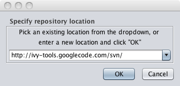
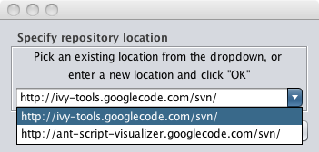
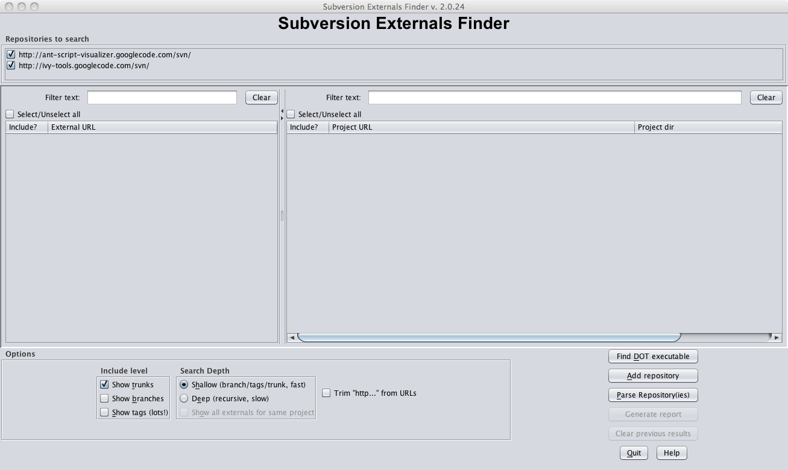
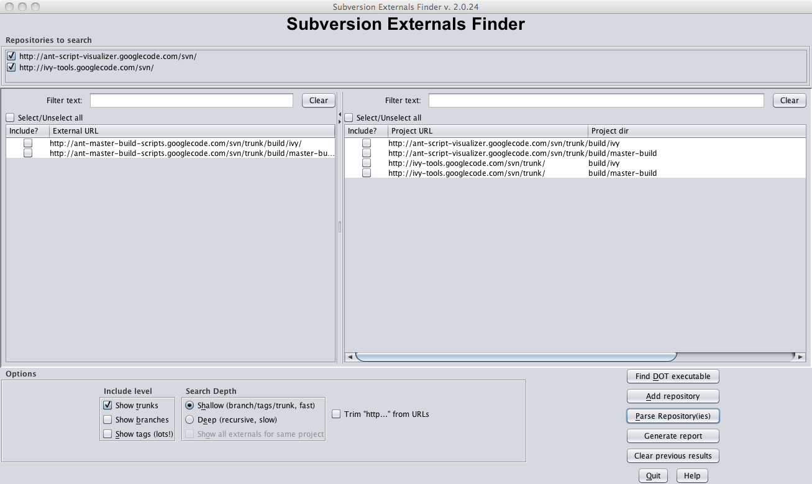
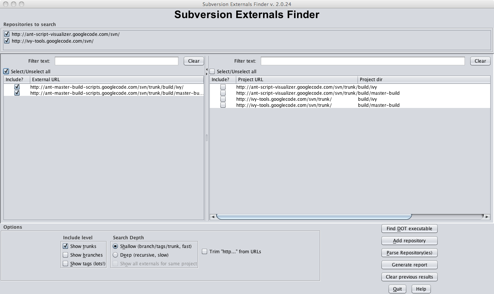
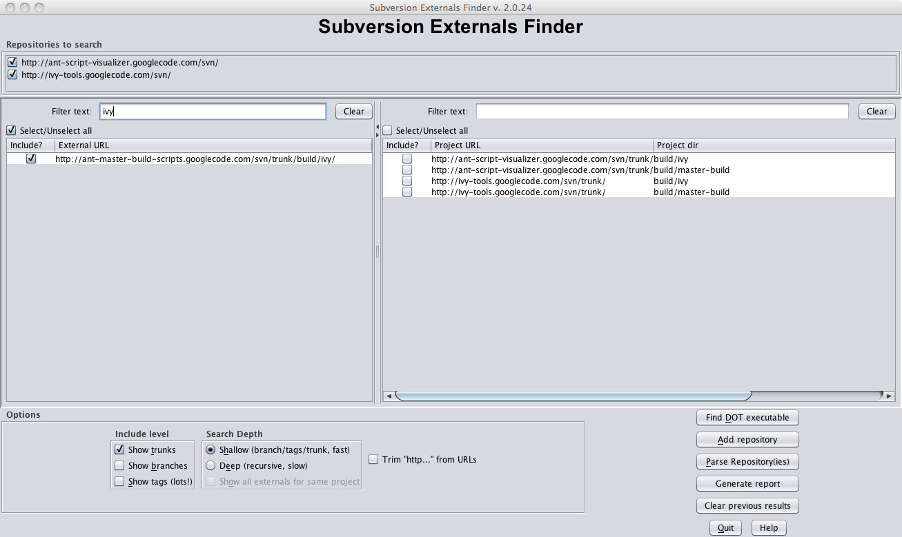
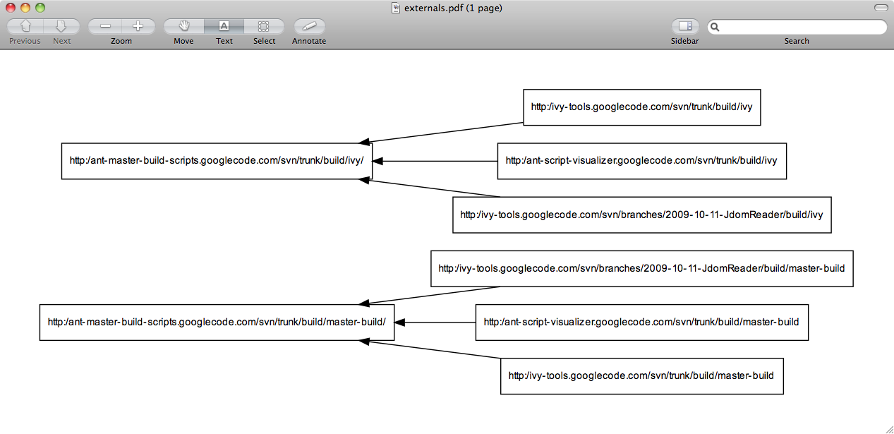
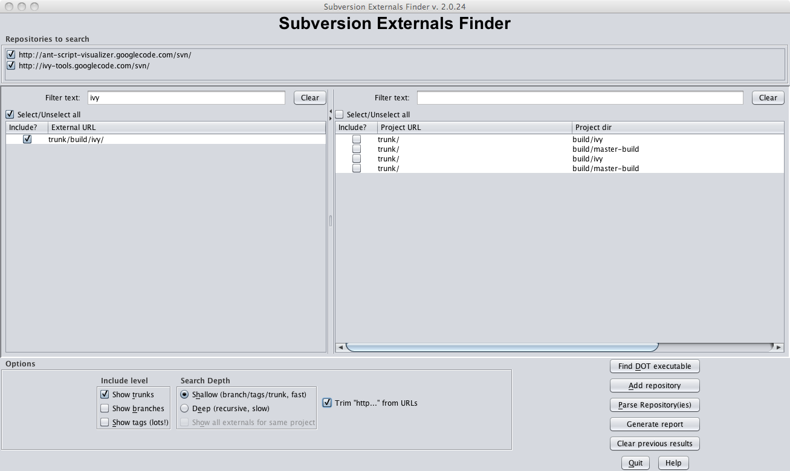
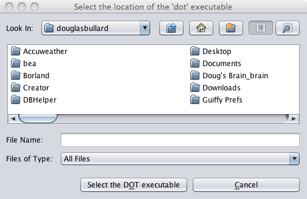

Subversion Externals Finder
Using Subversion Externals Finder
If you fired up the program, , you'd get something like the following:
The app will remember the last repository you point it at, you can add more repositories by clicking the "Add repository" button, and enter the location in the dialog:

If you click on the dropdown, it remembers the 10 last locations:

As you add repositories, they show as checkboxes in the top of the app - you can unselect them if you made a mistake:

Now that you've got one or more repositories selected, you can click the "Parse repositories" button - it will go through the Subversion repositories and gather data:

Click the checkboxes for any items you want to show up in the report. In the example shown, there are only several, but you may have hundreds or thousands showing up:

To easily filter the results, you can type in the text boxes, it will restrict the lists to matching text (still working on the regex stuff) - then, you can click the checkboxes. This is a really fast way to
add lots of different stuff in your repository

Click on the "Generate report" button, and you'll get a graph like the one below.

You can select several options. The "Include level" checkboxes tell the Subversion browser whether to go into branches, trunk, or tags, and the shallow/deep radio buttons control whether it will stop
at the "root" (trunk, branches, or tags) of a repository, or keep going to a full recursive directory search. Recursive searches are sloooow!
You can also check or uncheck the "Trim http..." checkbox. This determines whether the entire URl is displayed or not. If all your Subversion URLs start with the same http://xxxxxx stuff, you can choose not to show it and
save some screen real estate.

One last thing - you need AT&T's GraphViz to make the magic work. Go to http://www.graphviz.org/ to download the app. There are versions available for almost
every platform. I've included default locations for Windows and OS X. In any case, if you install it somewhere other then the default location for your platform, you'll need to use the
"Find Dot" button to tell the app where it is:

When the program is run, it'll automatically generate the images using GraphViz's libraries, then open the image for viewing in both Windows and OS x.
Enjoy!